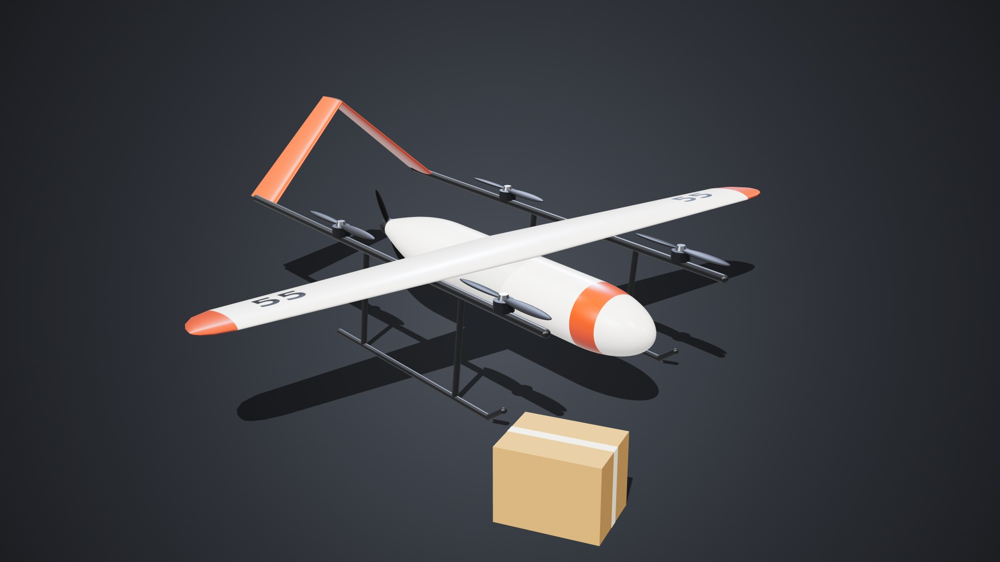

Cargo aircraft · Built in New York
Cargo that flies itself to where the road is slow.
We are building a vertical-takeoff cargo aircraft for clinics, work sites and communities that wait hours for a truck. It lifts off like a drone, cruises on a wing, delivers, and flies home.

- Stage
- Design and simulation
- First aircraft
- Stage 1, 5 kg of cargo
- Base
- New York
Why 55.
Fifty-five pounds is the line the FAA draws between a small unmanned aircraft and everything above it. Under that line, an aircraft can be built, tested and put to work quickly. Over it, every step takes longer and costs more.
Our first working aircraft sits just under the line. It carries less than the bigger ones we want to build later, but it flies sooner, and it teaches us what the bigger ones need.
The aircraft
One airframe, three jobs.
Vertical lift and forward flight each get their own propulsion, so neither one compromises the other. Nothing folds, tilts or retracts in the air.
Takes off from a parking space
Electric lift rotors raise it straight up. No runway, no launcher, no ground crew.
Flies on a wing
A pusher propeller takes over and the lift rotors stop. A wing covers distance on a fraction of the energy of hovering.
Drops off and comes home
It hovers at the destination, opens the belly bay, releases the parcel, and flies the return leg on its own.
Three stages
Small first. Then bigger. Then people.
Each stage uses the same layout and pays for the lessons of the next one. We build them in order.
The 55
The first aircraft that does real work. It stays under 55 pounds, so it can be built, tested and flown under the small-aircraft rules.
- Carries
- 5 kg of cargo
- Takeoff weight
- under 24.9 kg (55 lb)
- Wingspan
- about 3.2 m
- Power
- Electric

Heavy
The same layout scaled up for long routes. Eight lift rotors in four pairs, and an engine that runs the cruise propeller so distance is not limited by the battery.
- Carries
- 20 to 30 kg of cargo
- Distance per flight
- more than 400 km
- Wingspan
- about 5 m
- Power
- Hybrid

Two seats, road and air
Where we want to end up: an aircraft for two people and their luggage that also drives on the road, on three wheels, two in front and one behind.
- Carries
- two people and luggage
- Distance per flight
- 400 km
- On the road
- three wheels
- Wingspan
- about 10 m

These are design targets and concept renderings. None of these aircraft has been built or flown yet. Carrying people means certifying the aircraft and its pilot with the FAA, which takes years, and how the Stage 3 wing stows for the road is still an open design question. We will replace each number with a measured one as soon as we have it, and say so in the build log.
Who it is for
Routes where an hour matters.
Rural health
Lab samples, blood products and medication between clinics, labs and hospitals that are a long drive apart.
Work sites
The one part that stops a rig, a combine or a pump, delivered the same hour instead of the next day.
Remote communities
Islands, reservations and mountain towns where a ferry or a single road decides when supplies arrive.
Roadmap
Start small. Stay honest.
- Now
Learn and simulate Now
Remote pilot certification and a full delivery mission flown end to end in simulation, including wind and failures. Then practice flights with a small test airframe.
- Stage 1
The 55 Next
Under 55 lb, 5 kg of cargo, with a ground pad that charges from a standard EV charger. Built around a real route with our first partners.
- Stage 2
Heavy Later
20 to 30 kg over more than 400 km. Routine flights beyond the pilot's line of sight need FAA approval, which we will pursue together with our partners.
- Stage 3
Two seats, road and air Goal
Two people, their luggage, 400 km, and three wheels for the road. Everything learned in the first two stages goes into it.
Build log
We publish what we learn.
Have a route that takes too long?
We are looking for a small number of pilot partners to shape the first working aircraft around a real route. There is nothing to buy yet. When you write, tell us:
- where the cargo starts and where it needs to go
- what it is, and how much it weighs
- how often, and how long it takes today
Our contact address is being set up and will be posted here shortly.